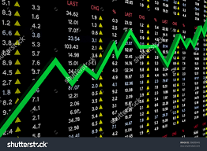

Opsionlar
Kol Opsionları
Put Opsionları
What is an 'Option'
What is an 'Option'
An option is a financial derivative that represents a contract sold by one party (the option writer) to another party (the option holder). The contract offers the buyer the right, but not the obligation, to buy (call) or sell (put) a security or other financial asset at an agreed-upon price (the strike price) during a certain period of time or on a specific date (exercise date).
Yuxarı qayıt
Call Option
Call options give the option to buy at certain price, so the buyer would want the stock to go up. Conversely, the option writer needs to provide the underlying shares in the event that the stock's market price exceeds the strike due to the contractual obligation. An option writer who sells a call option believes that the underlying stock's price will drop relative to the option's strike price during the life of the option, as that is how he will reap maximum profit.
This is exactly the opposite outlook of the option buyer. The buyer believes that the underlying stock will rise; if this happens, the buyer will be able to acquire the stock for a lower price and then sell it for a profit. However, if the underlying stock does not close above the strike price on the expiration date, the option buyer would lose the premium paid for the call option.
Yuxarı qayıt
Put Option
Put options give the option to sell at a certain price, so the buyer would want the stock to go down. The opposite is true for put option writers. For example, a put option buyer is bearish on the underlying stock and believes its market price will fall below the specified strike price on or before a specified date. On the other hand, an option writer who shorts a put option believes the underlying stock's price will increase about a specified price on or before the expiration date.
If the underlying stock's price closes above the specified strike price on the expiration date, the put option writer's maximum profit is achieved. Conversely, a put option holder would only benefit from a fall in the underlying stock's price below the strike price. If the underlying stock's price falls below the strike price, the put option writer is obligated to purchase shares of the underlying stock at the strike price.

Yuxarı qayıt